Livewire te permite asignar componentes directamente a una ruta de tu aplicación Laravel. Estos se denominan "componentes de página completa". Puedes usarlos para crear páginas independientes con lógica y vistas, completamente encapsuladas dentro de un componente Livewire.
Para crear un componente de página completa, define una ruta en el archivo route/web.php y use el método Route::get() para asignar el componente directamente a una URL específica. Por ejemplo, imaginemos que desea representar el componente CreatePost en la ruta dedicada: /posts/create.
Puedes lograr esto agregando la siguiente línea al archivo route/web.php:
use App\Livewire\CreatePost;
Route::get('/posts/create', CreatePost::class);
Ahora, cuando visites la ruta /posts/create en el navegador, el componente CreatePost se representará como un componente de página completa.
Recuerda que los componentes de página completa utilizarán el diseño de su aplicación, generalmente definido en el archivo resources/views/components/layouts/app.blade.php.
Puedes crear este archivo si aún no existe ejecutando el siguiente comando:
php artisan livewire:layout
Este comando generará un archivo llamado resources/views/components/layouts/app.blade.php.
Asegúrate de haber creado un archivo Blade en esta ubicación y de haber incluido un marcador de posición {{ $slot }}:
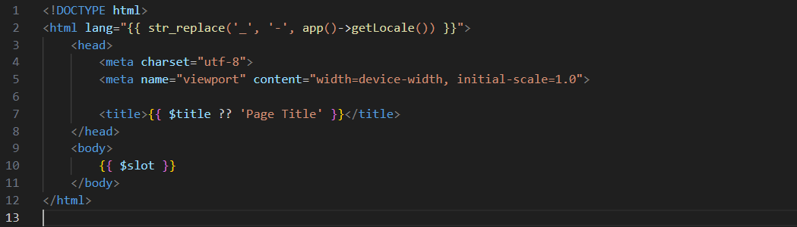Para usar un diseño personalizado en todos tus componentes, puedes configurar la clave de diseño en config/livewire.php en la ruta de su diseño personalizado, en relación con resources/views. Por ejemplo:
'layout' => 'layouts.app',
De esta forma Livewire representará los componentes de página completa dentro del archivo de diseño: resources/views/layouts/app.blade.php.
Para usar un diseño diferente para un componente específico, puede colocar el atributo #[Layout] de Livewire encima del método render() del componente, pasándole la ruta de vista relativa de su diseño personalizado:
use Livewire\Attributes\Layout; O si lo prefires, puedes usar este atributo encima de la declaración de la Clase.
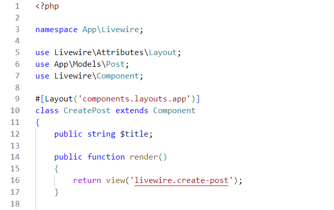Los atributos de PHP sólo admiten valores literales. Si necesitas pasar un valor dinámico, o prefieres esta sintaxis alternativa, puede usar el método fluent ->layout() en el método render() del componente:
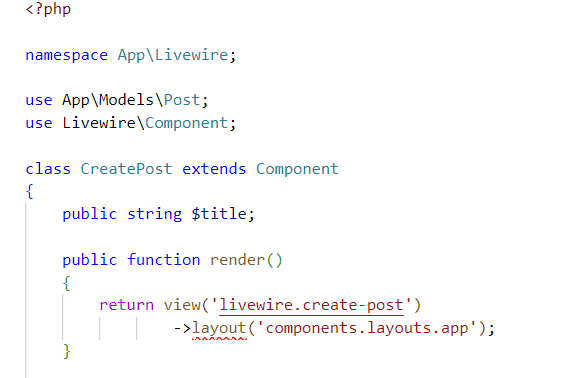Alternativamente, Livewire admite el uso de archivos de diseño Blade tradicionales con @extends.
Dado el siguiente archivo de layout:
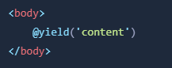Puedes configurar Livewire para que haga referencia a él usando ->extends() en lugar de ->layout():
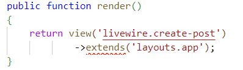Si necesitas configurar una @section para el componente, también puedes configurarlo con el método ->section():
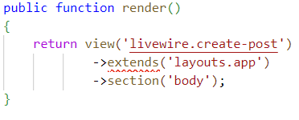Asignar títulos únicos en cada página de tu aplicación es util tanto para los usuarios como para los motores de búsqueda.
Primero asegurate que tu layout tiene un título dinámico.
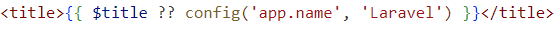Después, encima del método render() de tu componente Livewire, agrega el atributo #[Title] pasandole el título de tu página:
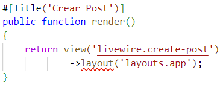Si prefires, puedes usar este atributo encima de la declaración de la Clase.
Además, si nesecitas un título dinámico puedes usar el método ->title():
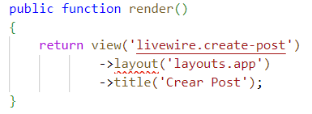Si tu archivo de layout tiene más slots aparte del $slot genérico, como por ejemplo un slot $header:
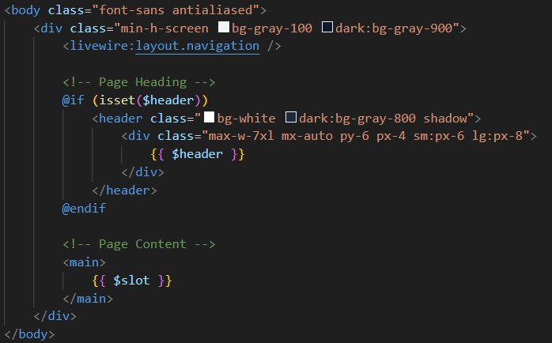Puedes incluirlos en la vista del componente de Livewire, fuera del elemento raiz del componente:
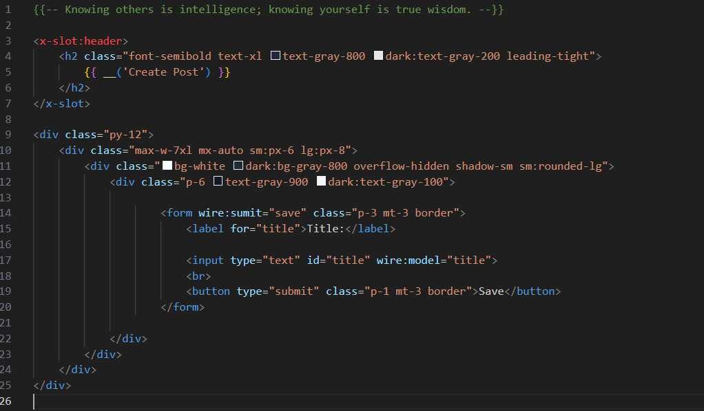Cuando trabajas con componentes de página completa, quizas nesecites acceder a los parametros de la ruta en el componente.
Definamos una ruta que muestra un post usando su id:
Route::get('post/{id}', ShowPost::class);
Ahora actualicemos el componente para aceptar el parametro en el método mount():
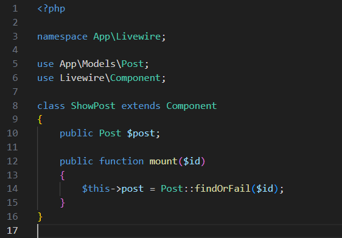El emparejamiento de modelo en las rutas de Laravel permite resolver automaticamente modelos de Eloquent en las rutas. Es decir que los puedes recibir igual que en un controlador:
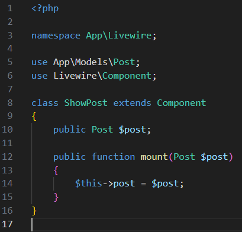Y como ya sabes, en este caso puedes omitir el método mount() para evitar el repetitivo:
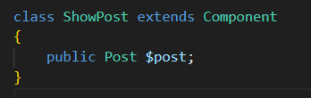En algunos escenarios podrías querer modificar la respueta y establecer una cabezera HTTP (header) personalizado. Puedes enganchar al objeto de respuesta llamando el método response() en la vista y usando una clausula para modificarlo:
use Illuminate\Http\Response; Ahora podemos ver el header en el navegador:
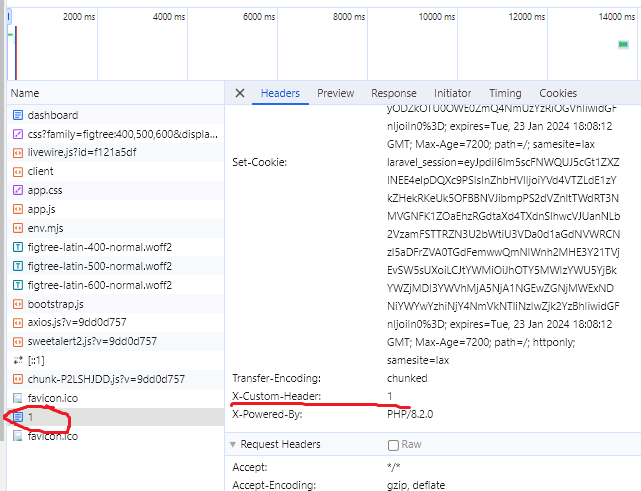